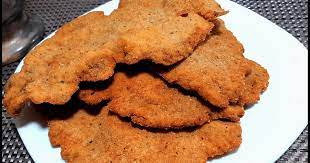

"Milanga"

"Recetuli"
Milangon
"Ingredientes"
- 2 huevos
- Jugo y ralladura de 1 limón
- 1 diente de ajo
- Perejil picado
- Sal y pimienta
- Carne Marge!!! donde esta la enjundiaaaaa
- Pan Rallado
"Pasos"
- Lo primero que vamos a hacer es batir los huevos y agregar dentro todos los ingredientes de la marinada. Vamos a mezclar todo bien.
- Siguiente: Vamos a salar las milanesas y colocarlas dentro de la marinada, tienen que quedar bien embebidas. Las vamos a tapar con papel film y las vamos a llevar a la heladera mínimo por una hora. Cuanto más, mejor.
- Pasado ese tiempo, vamos a sacarlas de la heladera. Luego, milanesa por milanesa,, vamos a empanarlas con el pan rallado, presionando de ambos lados hasta que las recubra bien.
- Finalmente, lo que queda es freírlas en aceite bien caliente hasta que estén doradas y disfrutarlas mucho..
Return to top
Return to main page